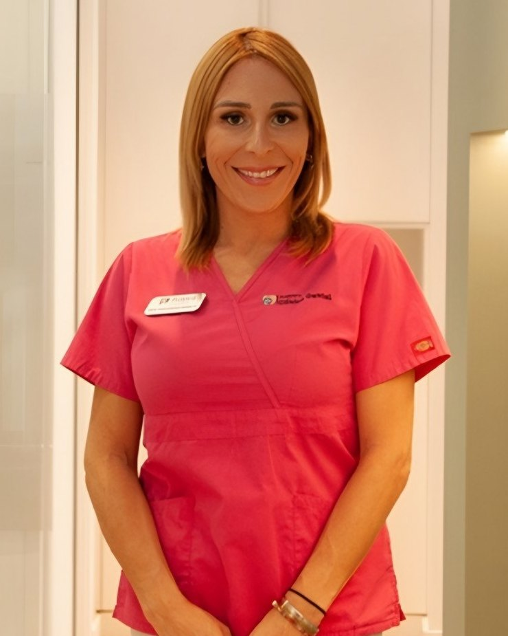

Prótesis dentales en Los Cristianos
Recuperar los dientes que faltan requiere una solución adaptada a tu boca. En Clínica Dental Guayero valoramos coronas, puentes, dentaduras y prótesis sobre implantes para ayudarte a recuperar función y confianza al sonreír.
Consulta las opciones para tu caso922 79 74 05
Una prótesis dental permite restaurar dientes dañados o sustituir los que se han perdido. En nuestra clínica de Los Cristianos estudiamos el estado de tu boca, tus necesidades y tus preferencias antes de proponer un tratamiento.
Prótesis fijas: coronas y puentes
Las prótesis fijas permanecen en la boca y no se retiran para la limpieza diaria. Una corona recubre un diente que necesita restauración; un puente sustituye una o varias piezas ausentes apoyándose en los dientes o implantes que lo sostienen.
Para valorar una prótesis sobre dientes naturales, revisamos el estado de las piezas de apoyo. Te explicaremos la preparación necesaria y las alternativas antes de decidir.
Prótesis removibles: parciales y completas
Las prótesis removibles se pueden sacar de la boca para limpiarlas. Pueden reemplazar algunos dientes o todos los de una arcada, según las piezas que se conserven.
En la consulta valoramos su apoyo, estabilidad y facilidad de manejo. Tras la colocación, te enseñaremos a ponerlas, retirarlas y cuidarlas, y revisaremos su adaptación.
Prótesis sobre implantes
Los implantes pueden servir de soporte para coronas, puentes o prótesis de mayor extensión. Según el caso, la solución puede ser fija o removible: llevar implantes no implica siempre que la prótesis quede fija.
El estudio debe coordinar el soporte y la restauración final. Consulta nuestra página de implantología en Los Cristianos para conocer esta parte del tratamiento.
¿Qué opción encaja contigo?
No existe una prótesis adecuada para todo el mundo. Revisamos los dientes que conservas, las encías, la mordida y las necesidades de soporte. También hablamos de tus expectativas, la higiene y el presupuesto.
Con esa información podemos comparar las alternativas indicadas y explicar sus ventajas, limitaciones y mantenimiento.
De la valoración a la adaptación
El plan comienza con una exploración y las pruebas que estén indicadas. Después se toman los registros necesarios para preparar la prótesis y se realizan las pruebas y ajustes previstos para cada caso.
Antes de empezar te explicaremos las fases, el presupuesto y los plazos orientativos. Si necesitas atención previa de dientes o encías, también formará parte de la planificación.
Cuidar la prótesis y tu boca
La prótesis necesita limpieza diaria y revisiones, igual que los dientes y las encías que la acompañan. Las pautas varían según sea fija, removible o sobre implantes.
La adaptación puede requerir ajustes. Si notas roces, dolor o que la prótesis se mueve, pide una revisión y evita modificarla por tu cuenta. Te indicaremos cómo mantenerla en función de su diseño.
¿Tu dentadura postiza no sujeta?
Con el tiempo las encías y el hueso cambian, y una dentadura que antes ajustaba puede moverse al comer o al hablar. A veces basta con reajustarla (rebase); otras conviene renovarla.
Si quieres más estabilidad, una sobredentadura sobre implantes permite anclar la prótesis. Más información en implantes dentales en Los Cristianos.
Coronas y puentes con impresión digital
Para muchas coronas y puentes tomamos las medidas con el escáner intraoral 3Shape TRIOS 3, sin pastas de impresión, lo que resulta más cómodo y preciso.
Te explicaremos el material indicado en tu caso, los pasos del tratamiento y cómo cuidarlas para que duren.

Especialista en prótesis dentales en Los Cristianos
La Dra. Macarena Varela Casañas, integrante del equipo de Guayero, es licenciada en Odontología por la Universidad de Murcia y cuenta con un máster en Implantología y Prostodoncia ITI.
Su formación incluye el Diploma en Odontología Estética y Restauradora por la Universidad Complutense de Madrid. Puedes conocer su trayectoria y la del resto de profesionales en nuestra página del equipo.
Conoce a nuestro equipoPreguntas frecuentes sobre prótesis dentales
¿Qué diferencia hay entre una prótesis fija y una removible?
La fija permanece colocada y solo debe retirarla el profesional cuando sea necesario. La removible está diseñada para que puedas quitarla y limpiarla siguiendo las indicaciones del equipo.
¿Todas las prótesis necesitan implantes?
No. Existen opciones apoyadas en dientes naturales o en la encía, además de las prótesis sobre implantes. La elección depende del estado de tu boca y del tratamiento que se pueda realizar.
¿Puedo renovar una prótesis que ya no ajusta bien?
Primero hay que revisar la prótesis y los tejidos de apoyo. Tras valorar el motivo del desajuste, te explicaremos si conviene ajustarla, repararla o estudiar una nueva solución.
¿Se puede fijar una dentadura postiza con implantes?
En muchos casos sí. Con dos o más implantes es posible anclar la dentadura para que no se mueva (sobredentadura) o incluso colocar una prótesis fija. Lo valoramos con un estudio del hueso disponible.
¿Qué hago si se me rompe la prótesis?
No intentes pegarla ni arreglarla en casa, porque puede deformarse o ajustar peor. Llámanos al 922 79 74 05 y te daremos cita para valorar si puede repararse.
¿Cuánto cuesta una prótesis dental?
Depende del número de dientes que haya que restaurar, del tipo de prótesis, los materiales y los tratamientos previos. Recibirás un presupuesto tras la valoración, con las fases del plan explicadas.
¿Cuánto tiempo dura una prótesis?
No hay una duración única. Influyen el diseño, los materiales, los hábitos y la evolución de tu boca. Las revisiones permiten comprobar su estado y detectar cuándo necesita mantenimiento o sustitución.
¿Es normal necesitar un tiempo de adaptación?
Al principio puede cambiar la sensación al hablar o masticar, especialmente con una prótesis removible. El equipo te orientará durante la adaptación. Si aparecen dolor o heridas, solicita una revisión.
¿Dónde puedo pedir cita en Los Cristianos?
Estamos en Av. Juan Carlos I, 26, Edificio Guayero, locales 7, 8 y 9, 38650 Los Cristianos, Arona, Santa Cruz de Tenerife. Llámanos al 922 79 74 05 o escríbenos por WhatsApp al 609 04 46 03.
Más información para pacientes: prótesis dentales, Consejo General de Dentistas, y adaptación y cuidados de las prótesis removibles, NHS (en inglés).
Contacto
+34 922 79 74 05clinicaguayero@gmail.com
Avda. Juan Carlos I, 26 –
Edificio Guayero, Locales 7, 8 y 9
38650 Los Cristianos
Horario
Lunes a Viernes de 10:00-19:00h